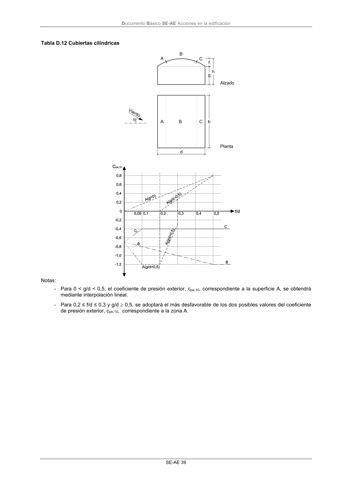

DB-SE-AE Acciones en la edificación · edición 2009-04 · capa oficial
Documento DB-SE-AE-oficial · SHA-256 del PDF 26116e5088955f0c6963a6187270cad282e1e7bf5a53a90f695c8fa50b4e4487
Página física 43 de 46.
Copia fiel del PDF fuente · Fuente oficial
Ficha de la disposición en la fuente oficial
Formato: Texto de la página (Markdown)
Documento Básico SE-AE Acciones en la edificación SE-AE 39 Tabla D.12 Cubiertas cilíndricas Notas: - Para 0 < g/d < 0,5, el coeficiente de presión exterior, cpe,10, correspondiente a la superficie A, se obtendrá mediante interpolación lineal. - Para 0,2 ≤ f/d ≤ 0,3 y g/d ≥ 0,5, se adoptará el más desfavorable de los dos posibles valores del coeficiente de presión exterior, cpe,10, correspondiente a la zona A.
